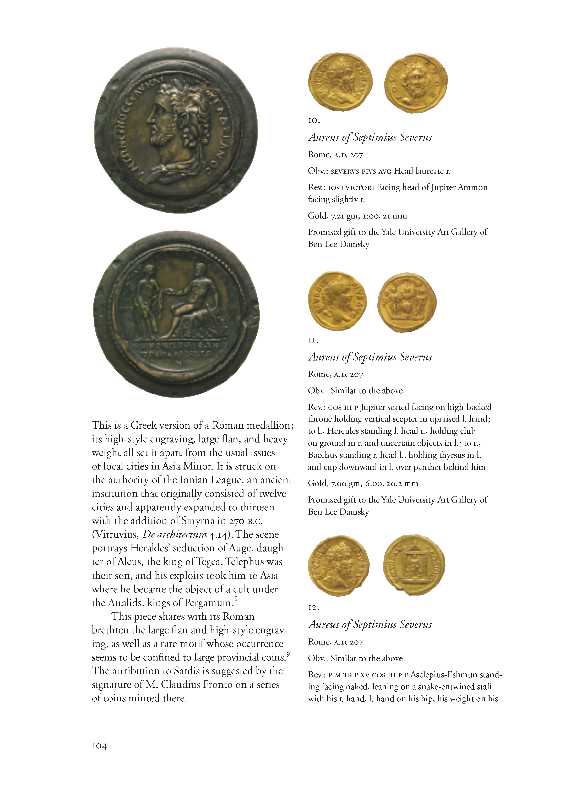
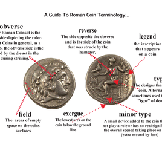
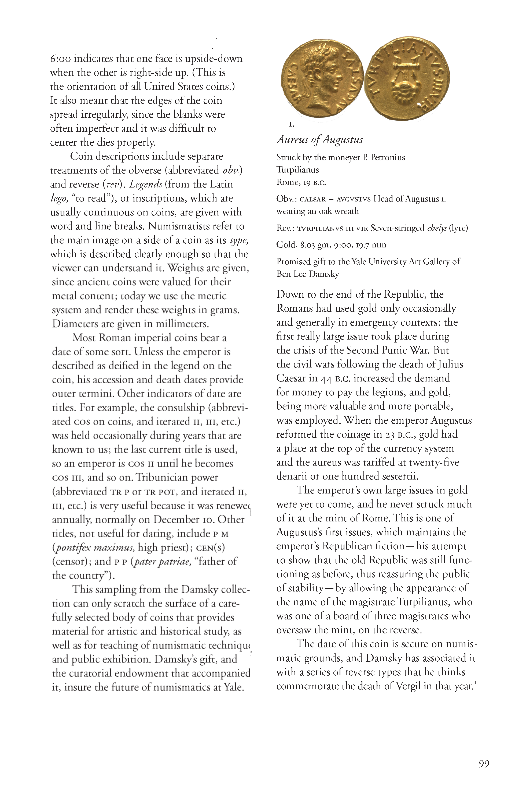
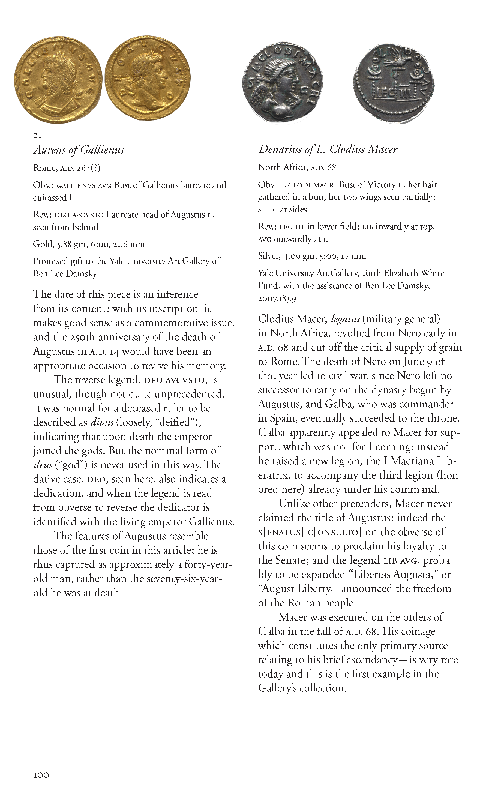
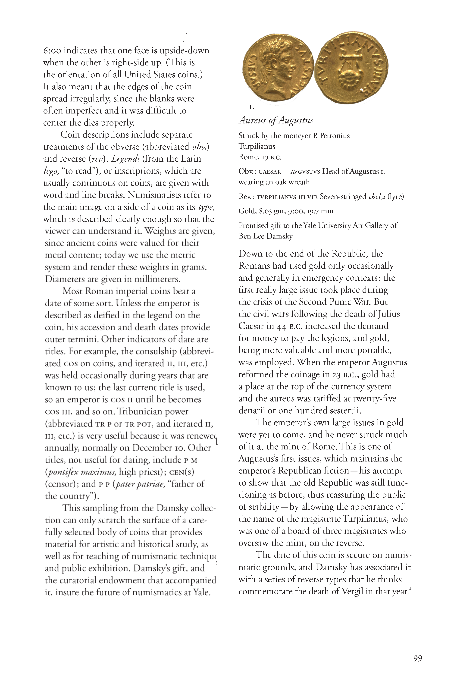
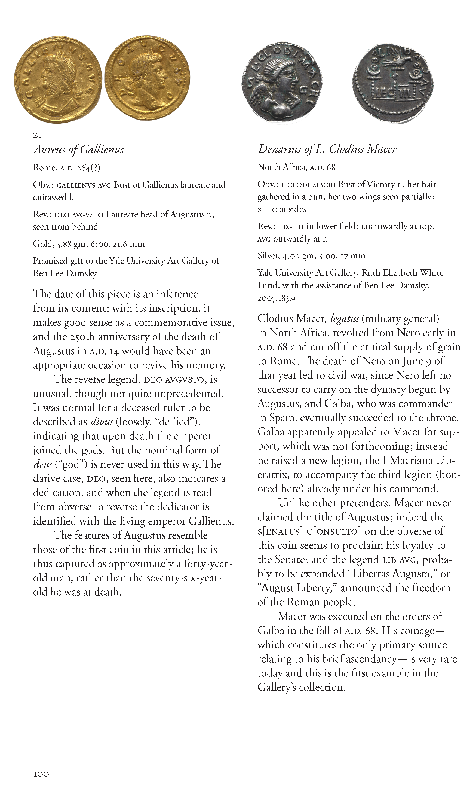

Roman Coin Terminology
Vocabulary 101

understanding the basics
Evidence suggests that collecting coins and the understanding of their significance in terms of the historical dates back thousands of years to Ancient Roman times. Suprisingly, the study of coins in a more systematic nature did not come around until the late 18th century. Though, I would assume the majority of coin enthusiast are perhaps collectors just enjoying the hobby and would rather not pursue some master's degree in numismatics(actually, I don't believe they have one).Even still, understanding the terminology is an important aspect when breaking into any new subject and can be especially useful when starting an ancient coins collection.
Not only for understanding and properly communicate with fellow collectors , but along those lines knowing correct terminology can also prevent you from making uninformed purchases and decisions regarding your collection. The following was taken from from William Metcalf in association with Yale's numismatic collection at the gallery which, at more than 120,000 objects, is by far the largest numismatic collection at any American university. It provides as a good guide to terminology used when describing Roman coins in discussion.
 


